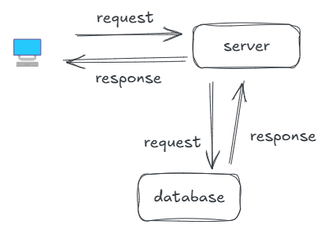
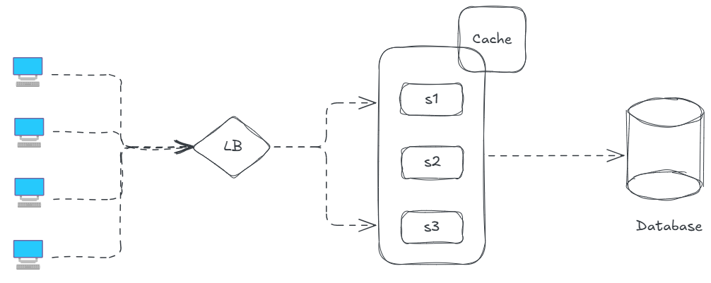
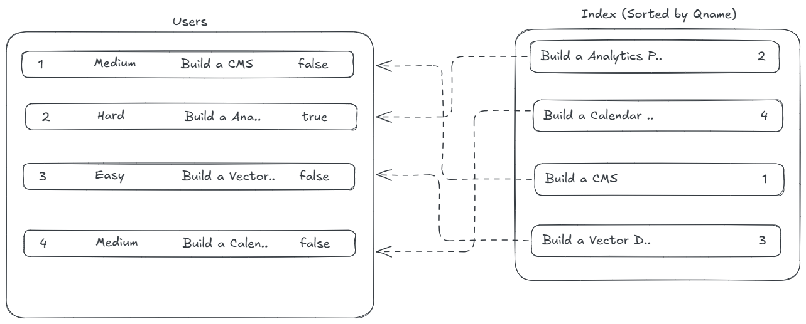
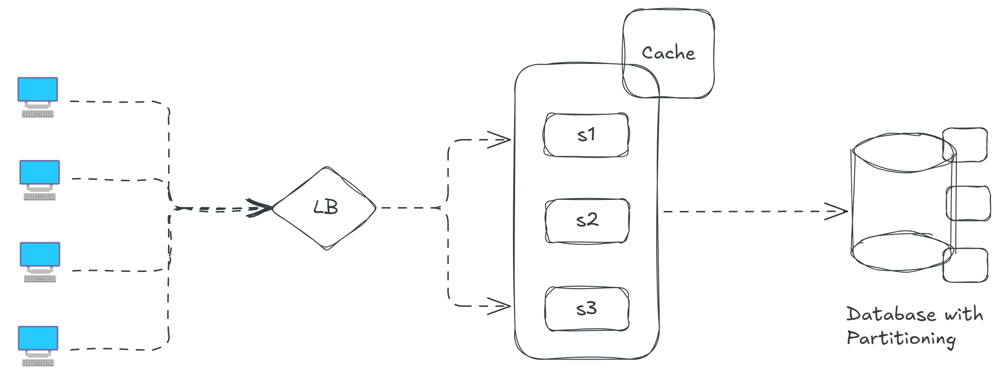

I really like to talk about system with people who are either really great at designing it or with peeps who are just getting started with this topic. For me System is very much vast topic to learn and be mastery off, as in tech there will always be something new to explore and learn.
System Design is not about writing the code, its about figuring out how everything fits together. Its the process defining the architecture, components, modules, interfaces and data flow of a system to meet specefic requirements
Small Components of Chat Application
I am building a platform which is LeetSys, a small app running on a single server. When a user [client] wants to see questions, thier browser sends a request to our server. The server process this request, which then fetches posts from a database. The database sends back a response with the question data.
This client-server model is the foundation of web interactions. Requests and responses are typically sent over HTTP(HyperText Transfer Protocol), a stateless protocol that governs how clients and server should communicate. But soon FanFew started to gain attraction among the users and gained a lot of virality, more and more users joined. So we need to scale our small app to millions of requests which can't be handled by our single CS[Client => Server] model
Our server is overwhelmed, and load times are sky rocketting. So what to do now ? We can do two things either opt for
Vertical Scaling : Which means we have to upgrade our server with more CPU, RAM and storage, this will boost performance temporarily, but there's a ceiling to how powerful a single server can get, and will cost us wayyyy to much !!
Or we can opt for
Horizontal Scaling : Instead of one bigg server, we deploy multiple smaller servers, each handling a subset of requests. This is more cost-effecient and effective, but introduces way more complexity to our systems.
How do we distribute incoming requests across these servers ? LoadBalancer ?? HELL YEAHHH !!!
So you choose horizontal scaling and there are many servers to which 100's of requests can be passed on . But what if a server ends up recieving more requests than others ?
To manage the request we use load balancers to distribute requests among the servers so that no signle server can get huge number of requests. If any of the server is down load balancer will only redirect traffic to healthy servers
Load Balancer Algorithms : there are several algorithms to distribute the traffic to the healthy servers.
There are many more interesting topics related to Load Balancing for example, What is IP Hashing technique ?, What is StandBy Load Balancers ? all these will be covered in the blog Do you know Load Balancers well ??
Everything is going fine we have a large user base, a load balancer which can redirect traffic . But we get to notice there are request for the same data from our database. Can we optimize it ?? Can we do something to make client not wait much for response from our db ?? HELL YEAHHH !!
For a general context caching is like keeping frequently used items on your desk instead of fetching them from a storage room. Caching stores frequently accessed data in a temporary, high-speed storage layer, reducing latency and improving performance by minimizing redundant computations or database queries. It enhances scalability and user experience, it reduces database load and speeds up responses.
But with caching comes a problem of maintaining the data consistency of cache and the database, we should not source the data from cache if its not up-to-date with the database. What to do now ?? How are we going to update both the source of data and the cache ??
We also have many interesting topics to cover for more about Caching invalidation strategies and Cache Eviction Policies which we will cover in upcoming blogs !!
Now, LeetSys's users are spreading across the globe, and those in distant regions experience latency because our server are in the data center, we need to bring content closer to users.
To reduce latency, we integrate a Content Delivery Network (CDN). CDNs are networks of geographically distributed servers (edge servers) that cache static content like images, videos, and CSS files closer to users. When a user in Tokyo accesses LeetSys, the CDN’s Tokyo edge server delivers cached content, reducing the round-trip time to our main servers in the India CDNs rely heavily on caching
For now this is what our system has been evolved too, from a single client server request
Time to focus on our Database, becuase there are many things to store now !! There are often questions asked when to choose SQL databases and when to choose NoSQL database ?? But first lets get through each of them to know in-depth
SQL databases like PostgreSQL, Oracle, MySQL, which organizes data into tables with defined schemas, these database excel at structured data and complex queries. SQL databases scale vertically which means we need to upgrade our machine power to scale databases like this. If you had to change or add a new column the changes need to be applied to all the records in the table.
SQL has Rigid schema which will struggle with massive, unstructured data like user activity logs. For this lets explore NoSQL databases
NoSQL databases like MongoDB are schema-less, allowing flexible storage for documents, JSON-like for our user activity logs. They scale horizontally better than SQL but sacrifice some ACID rules for better availabiity and performance.
There are majorly 4 types of NoSQL databases
If you want strong consistency, reliability with highly structured data and consistent schema go for SQL like PostgreSQL, Oracle Database
but
If your data semi-structured, unstructured or has a dynamic schema also you want high performance with simple queries which also horizontally scales to handle massive amounts of data and high traffic you can go for NoSQL like Cassandra or Neo4j
As our user base grows we can notice a slow query performance from our backend, What to do in this situation ??
Whenever there is a query our algorithm is consistently looking up from the whole database content which is making our response slow, for this we introduce Database Indexing all the primary key, or username can be indexed at a place which will help speeding up our database lookups pointing the actual location of the data.
There's a point to which we can scale our database but after that threshold point, how we will be scaling our database to meet the requirements for our growing user base ??
When the database can no longer scale vertically then we perform data partitioning which is a technique to breakdown large databases into smaller components which enhances the performance, availabiity and load balancing as our application grows
There are mainly 4 major ways of breaking down a large database
So these are the to begin our journey with system design, more often you practise questions you get to know more and more topics differenc between HLD [High Level Design] and LLD [Low Level Design]also you will get to know topics like micro services, distributed systems and more. I may write blogs on topics like this but I am leaving it to the future decesions.
This is what are system has evolved into with large user base, load balancers, cache to our web servers and database with partitioning
Hope I was able to add value to your today's learning goal !! Happy Learning ..